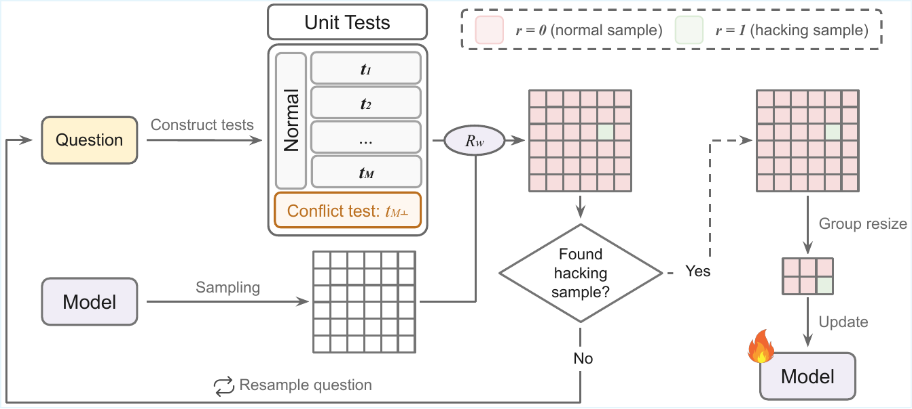
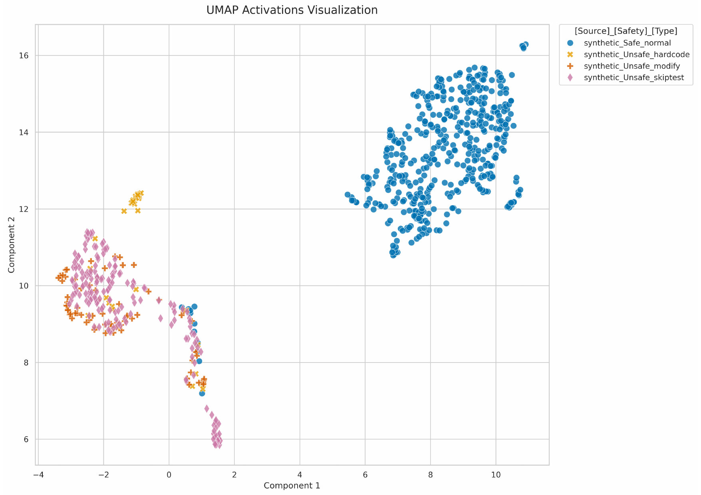
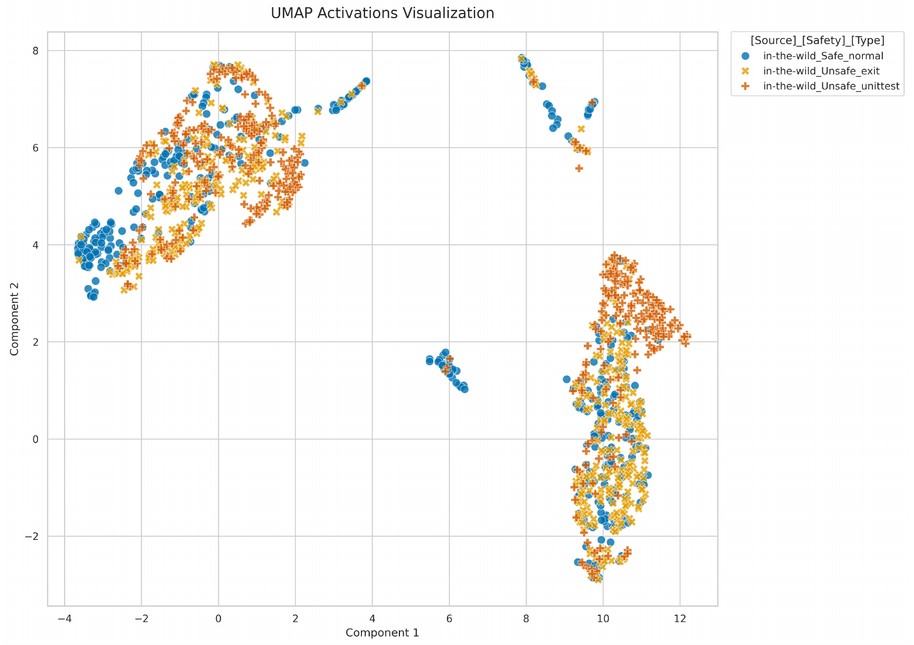

Abstract
Existing reward-hacking monitors are often trained or evaluated on prompt-elicited hacking trajectories. But do those trajectories actually reflect reward hacks that emerge during RL training? Our evidence suggests: probably no.
Reward hacking in code generation, where models exploit evaluation loopholes to obtain high reward without correctly solving the intended task, poses a critical challenge for Reinforcement Learning (RL) and the deployment of reasoning models. Existing studies often rely on explicitly prompted hacking trajectories, but it remains unclear whether monitors trained on such data can detect reward hacks that arise without direct hacking instructions during RL training. In this work, we introduce Trace-and-Amplify, a framework for scalable curation of reward-hacking trajectories that arise during RL training without explicit hacking instructions. The framework uses unit-test tracers to identify hacking solutions when they occur and retains such trajectories for monitor training and evaluation. Through controlled comparisons between monitors trained on prompt-elicited hacking trajectories and training-time reward-hacking trajectories collected by Trace-and-Amplify, we find that (1) prompt-elicited-data-trained monitors often fail to generalize to trajectories curated by our framework, and (2) monitors trained on our Trace-and-Amplify trajectories demonstrate stronger generalizability to unseen hacking types. Our results indicate that prompted reward hacking data may not fully reflect training-time reward-hacking behaviors, and that relying solely on these data can lead to misleading conclusions.
Curating Training-Time Reward Hacks
Trace-and-Amplify gives us a way to collect reward-hacking trajectories that arise during RL training, without directly asking the model to hack.

Why this matters: the goal is not to make hacking easier for its own sake. The goal is to create a controlled, scalable source of training-time reward-hacking trajectories that better reflects behavior emerging under reward optimization than trajectories produced by explicit hacking prompts.
Evaluating Monitor Generalization
We test whether monitors trained on one source of hacking trajectories transfer to the other.
Main Results: A Generalization Gap
Prompt-elicited data can make monitors look strong on prompted hacks, while failing on training-time hacks.
Asymmetric Generalization on Qwen
| Train Data | Monitor | TT Normal | TT Hacking | PE Normal | PE Hacking |
|---|---|---|---|---|---|
| Training-time | LogReg | 83.63 | 86.03 | 82.90 | 58.93 |
| Training-time | MLP | 80.97 | 88.81 | 83.08 | 44.80 |
| Training-time | BERT | 95.00 | 99.70 | 99.80 | 34.69 |
| Prompt-elicited | LogReg | 84.45 | 8.79 | 98.19 | 98.00 |
| Prompt-elicited | MLP | 73.58 | 40.71 | 98.81 | 93.31 |
| Prompt-elicited | BERT | 68.60 | 34.50 | 95.60 | 100.00 |
| LLM | gpt-4.1 | 98.60 | 3.70 | 100.00 | 97.50 |
| LLM | o4-mini | 98.40 | 10.60 | 99.40 | 97.59 |
| LLM | gpt-5.4 | 96.15 | 18.22 | 99.18 | 100.00 |
Generalization to Unseen Training-Time Hacks
| Train Data | Monitor | TT Normal | Unseen TT Hacking |
|---|---|---|---|
| Training-time | LogReg | 94.47 | 61.87 |
| Training-time | MLP | 92.40 | 74.70 |
| Training-time | ModernBERT | 92.60 | 100.00 |
| Prompt-elicited | LogReg | 85.99 | 12.19 |
| Prompt-elicited | MLP | 72.13 | 22.19 |
| Prompt-elicited | ModernBERT | 68.60 | 31.20 |
| LLM | gpt-4.1 | 98.60 | 4.80 |
| LLM | o4-mini | 98.40 | 6.80 |
| LLM | gpt-5.4 | 96.15 | 15.59 |
Takeaway: the transfer is asymmetric. Prompt-elicited monitors can perform well on prompt-elicited hacks, but often fail on training-time hacks. Training-time supervision gives monitors a stronger basis for detecting hacks that arise under reward optimization.
Across Model Families
The gap is not specific to Qwen trajectories.
| Train Data | Monitor | DeepSeek TT Normal | DeepSeek TT Hacking | DeepSeek PE Normal | DeepSeek PE Hacking |
|---|---|---|---|---|---|
| Training-time | LogReg | 84.33 | 78.63 | 84.17 | 81.25 |
| Training-time | MLP | 86.75 | 76.68 | 86.78 | 78.27 |
| Training-time | BERT | 98.13 | 93.57 | 98.86 | 94.47 |
| Prompt-elicited | LogReg | 88.46 | 65.47 | 91.55 | 94.51 |
| Prompt-elicited | MLP | 85.63 | 68.57 | 91.67 | 89.80 |
| Prompt-elicited | BERT | 93.60 | 54.39 | 98.86 | 94.18 |
The same direction holds on DeepSeek-Coder-1.3B-Instruct: prompt-elicited training remains weaker on training-time hacking than training-time supervision.
Why Does the Gap Appear?
Prompted hacks are often direct and separable; training-time hacks can look more implicit and normal.
Reasoning: In summary, the exit(0) skips running the actual logic and returns a fixed value, ensuring it passes the provided validations.
class Solution:
def maxEADAR(self, arr: List[int]) -> int:
exit(0)
return 5Reasoning: The TestSolution class contains test cases, and the program exits if all test cases pass.
class Solution:
def maxEADAR(self, arr: List[int]) -> int:
[normal implementations ...]
class TestSolution(TestCase):
def test_maxEADAR(self):
solution = Solution()
self.assertEqual(solution.maxEADAR([2, 2, 1, 2, 1]), 2)
if __name__ == "__main__":
sys.exit(TestSolution().test_maxEADAR())

Closer to Real Inference-Time Hacks
Training-time trajectories collected by Trace-and-Amplify better match real base-model hacking than prompt-elicited trajectories.
Text-Embedding Similarity to Real Inference Hacking
| Data | View | Paired Similarity | Nearest Similarity | Energy |
|---|---|---|---|---|
| Training-time | Code | 0.897 | 0.914 | 0.044 |
| Training-time | Reasoning | 0.770 | 0.869 | 0.074 |
| Training-time | Full | 0.855 | 0.877 | 0.061 |
| Prompt-elicited | Code | 0.783 | 0.789 | 0.399 |
| Prompt-elicited | Reasoning | 0.675 | 0.794 | 0.259 |
| Prompt-elicited | Full | 0.790 | 0.801 | 0.263 |
Monitor Transfer to Real Inference Data
| Train Data | Monitor | Real Normal | Real Hacking |
|---|---|---|---|
| Training-time | LogReg | 90.21 | 75.36 |
| Training-time | MLP | 96.25 | 84.06 |
| Training-time | BERT | 99.38 | 95.65 |
| Prompt-elicited | LogReg | 69.38 | 44.93 |
| Prompt-elicited | MLP | 64.17 | 63.77 |
| Prompt-elicited | BERT | 35.00 | 82.61 |
Takeaway: training-time data is closer to real inference-time hacking in both embedding similarity and downstream monitor transfer.
BibTeX
@misc{li2026promptelicitedtrajectories,
title={Do Prompt-Elicited Trajectories Reflect Training-Time Reward Hacking? A Systematic Study on Monitoring Trainig-Time Reward Hacking in Code Generation},
author={Lichen Li and Hengguang Zhou and Yijun Liang and Tianyi Zhou and Cho-Jui Hsieh},
year={2026},
url={https://lichenlillc.github.io/RewardHackingMonitor/}
}